import pandas as pd
import numpy as np
import matplotlib.pyplot as plt
import seaborn as sns
import warnings
import matplotlib as mpl
# 유니코드 깨짐현상 해결
mpl.rcParams['axes.unicode_minus'] = False
# 나눔고딕 폰트 적용
plt.rcParams["font.family"] = 'NanumGothic'
# 경고 무시
warnings.filterwarnings('ignore')
%matplotlib inline성공적인 입찰을 위한 데이터 분석 (토건, 토목, 시공 편)
주요 용어 정리
- 기초금액: 공사 입찰을 위한 기준 금액 (부가가치세가 합산된 금액)
- 예가: 기초금액±3% 으로 형성되며, 이 안에 들어오는 금액으로 입찰 해야함.(결국, 예가에 근접한 가격을 입찰해야함)
- 예정가격: 예가(%)를 기초금액에 곱한 가격
- 사정율: 예정가격을 기준으로 예정가격을 예측하는 비율. (1등 선정된 업체의 예가)
그 외 다소 생소한 용어들이 존재하나, 분석에 있어 주요한 용어만 설명합니다.
입찰 선정 방식
예가에 가장 근접한 기업이 입찰 받음. 단, 예가보다는 높은 금액을 입찰해야 합니다.
예시
기초금액: 1억원
입찰급액 - A기업: 9900만원 - B기업: 1억 1000만원 - C기업: 1억 2000만원
사정율 - A기업: 99.0%, (1억원 대비 99.0% 이므로) - B기업: 101.0%, (1억원 대비 101.0% 이므로) - C기업: 102.0%, (1억원 대비 102.0% 이므로)
시나리오 1) 예가: 1억 1500만원
- C기업 입찰. B기업이 예가에는 더 근접한 금액을 제시했지만, 예가보다 낮으므로, C기업이 입찰 받습니다.
데이터 분석 방식
- 나라장터에서 필요한 데이터 크롤링
pandas,numpy,matplotlib등을 활용하여 분석 및 시각화 진행sklearn,xgboost,lgbm을 활용하여 데이터 예측 수행
데이터 로드
train = pd.read_csv('data/train.csv')컬럼 출력
train.columnsIndex(['번호', '공고업종', '지역', '공고번호', '발주기관', '입찰일시', '기초금액', '추정가격', '낙찰하한율',
'예정가격', '예가', '낙찰하한가', '투찰', '업체명', '대표자', '투찰금액', '투찰율', '기초대비',
'업체별사정율', 'num_1_num', 'num_1_money', 'num_1_per', 'num_2_num',
'num_2_money', 'num_2_per', 'num_3_num', 'num_3_money', 'num_3_per',
'num_4_num', 'num_4_money', 'num_4_per', 'num_5_num', 'num_5_money',
'num_5_per', 'num_6_num', 'num_6_money', 'num_6_per', 'num_7_num',
'num_7_money', 'num_7_per', 'num_8_num', 'num_8_money', 'num_8_per',
'num_9_num', 'num_9_money', 'num_9_per', 'num_10_num', 'num_10_money',
'num_10_per', 'num_11_num', 'num_11_money', 'num_11_per', 'num_12_num',
'num_12_money', 'num_12_per', 'num_13_num', 'num_13_money',
'num_13_per', 'num_14_num', 'num_14_money', 'num_14_per', 'num_15_num',
'num_15_money', 'num_15_per', 'total', 'Unnamed: 65', 'Unnamed: 66'],
dtype='object')1. 예가
train['예가'].head()0 99.4075 % (-0.5924 % )
1 99.2730 % (-0.7269 % )
2 99.1207 % (-0.8792 % )
3 99.8778 % (-0.1221 % )
4 99.6818 % (-0.3181 % )
Name: 예가, dtype: object예가에 대한 전처리 작업 수행. 필요한 숫자 소수점 4째자리 까지 추출
train['예가'] = train['예가'].str.extract(r'(\d+[.]\d+)')예가를 object -> float로 변환
# float로 변경
train['예가'] = train['예가'].astype('float32')예가는 97 ~ 103의 범위를 가져야 함.
이에 어긋나는 데이터는 drop
train.loc[(train['예가'] < 97) | (train['예가'] > 103), '예가']7377 0.000000
8646 0.000000
9522 0.000000
10945 90.908997
15187 59.200001
15268 0.000000
16133 0.000000
16382 0.000000
16543 0.000000
17183 0.000000
25247 96.362503
29316 0.000000
Name: 예가, dtype: float32drop_idx = train.loc[(train['예가'] < 97) | (train['예가'] > 103), '예가'].indextrain = train.drop(drop_idx)예가가 NaN인 값을 확인하고 drop
train.loc[train['예가'].isnull()]| 번호 | 공고업종 | 지역 | 공고번호 | 발주기관 | 입찰일시 | 기초금액 | 추정가격 | 낙찰하한율 | 예정가격 | ... | num_13_per | num_14_num | num_14_money | num_14_per | num_15_num | num_15_money | num_15_per | total | Unnamed: 65 | Unnamed: 66 | |
|---|---|---|---|---|---|---|---|---|---|---|---|---|---|---|---|---|---|---|---|---|---|
| 31788 | NaN | NaN | NaN | NaN | NaN | NaN | NaN | NaN | NaN | NaN | ... | 99.890635 | 7214 | NaN | 99.905027 | 7188 | NaN | 99.899742 | NaN | NaN | 99.891641 |
1 rows × 67 columns
drop_idx = train.loc[train['예가'].isnull()].indextrain = train.drop(drop_idx)예가에 대한 데이터 분포 확인
sns.distplot(train['예가'])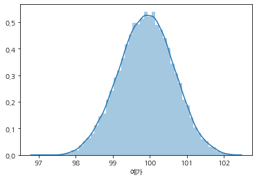
train['예가'].describe()count 31776.000000
mean 99.905418
std 0.732136
min 97.069199
25% 99.406502
50% 99.912399
75% 100.410723
max 102.201698
Name: 예가, dtype: float642. 가격
train.filter(regex='금액|가격').head()| 기초금액 | 추정가격 | 예정가격 | 투찰금액 | |
|---|---|---|---|---|
| 0 | 166,200,000 원 | 151,090,909 원 | 165,215,275 원 | 145,039,600 |
| 1 | 49,000,000 원 | 44,545,455 원 | 48,643,800 원 | 42,786,020 |
| 2 | 35,000,000 원 | 31,818,182 원 | 34,692,275 원 | 30,530,000 |
| 3 | 27,000,000 원 | 24,545,455 원 | 26,967,025 원 | 23,688,450 |
| 4 | 64,460,000 원 | 58,600,000 원 | 64,254,925 원 | 56,382,000 |
가격에 대한 원 단위를 제거 및 ,를 제거합니다.
price_cols = train.filter(regex='금액|가격').columns
price_colsIndex(['기초금액', '추정가격', '예정가격', '투찰금액'], dtype='object')train[price_cols].head()| 기초금액 | 추정가격 | 예정가격 | 투찰금액 | |
|---|---|---|---|---|
| 0 | 166,200,000 원 | 151,090,909 원 | 165,215,275 원 | 145,039,600 |
| 1 | 49,000,000 원 | 44,545,455 원 | 48,643,800 원 | 42,786,020 |
| 2 | 35,000,000 원 | 31,818,182 원 | 34,692,275 원 | 30,530,000 |
| 3 | 27,000,000 원 | 24,545,455 원 | 26,967,025 원 | 23,688,450 |
| 4 | 64,460,000 원 | 58,600,000 원 | 64,254,925 원 | 56,382,000 |
,를 제거합니다.
for col in price_cols:
train[col] = train[col].str.replace(',', '')
train[col] = train[col].str.replace('원', '')train[price_cols].head()| 기초금액 | 추정가격 | 예정가격 | 투찰금액 | |
|---|---|---|---|---|
| 0 | 166200000 | 151090909 | 165215275 | 145039600 |
| 1 | 49000000 | 44545455 | 48643800 | 42786020 |
| 2 | 35000000 | 31818182 | 34692275 | 30530000 |
| 3 | 27000000 | 24545455 | 26967025 | 23688450 |
| 4 | 64460000 | 58600000 | 64254925 | 56382000 |
NaN값을 채워줍니다.
type을 int로 변경하기 전 NaN 값을 채워줍니다.
train[price_cols].isnull().sum()기초금액 0
추정가격 66
예정가격 0
투찰금액 0
dtype: int64train[price_cols] = train[price_cols].fillna(0)train[price_cols].isnull().sum()기초금액 0
추정가격 0
예정가격 0
투찰금액 0
dtype: int64train[price_cols].head()| 기초금액 | 추정가격 | 예정가격 | 투찰금액 | |
|---|---|---|---|---|
| 0 | 166200000 | 151090909 | 165215275 | 145039600 |
| 1 | 49000000 | 44545455 | 48643800 | 42786020 |
| 2 | 35000000 | 31818182 | 34692275 | 30530000 |
| 3 | 27000000 | 24545455 | 26967025 | 23688450 |
| 4 | 64460000 | 58600000 | 64254925 | 56382000 |
train[price_cols].info()<class 'pandas.core.frame.DataFrame'>
Int64Index: 31776 entries, 0 to 31787
Data columns (total 4 columns):
기초금액 31776 non-null object
추정가격 31776 non-null object
예정가격 31776 non-null object
투찰금액 31776 non-null object
dtypes: object(4)
memory usage: 1.2+ MBfloat 타입으로 가격 컬럼을 변환
train[price_cols] = train[price_cols].astype('float32')train[price_cols].head()| 기초금액 | 추정가격 | 예정가격 | 투찰금액 | |
|---|---|---|---|---|
| 0 | 166200000.0 | 151090912.0 | 165215280.0 | 145039600.0 |
| 1 | 49000000.0 | 44545456.0 | 48643800.0 | 42786020.0 |
| 2 | 35000000.0 | 31818182.0 | 34692276.0 | 30530000.0 |
| 3 | 27000000.0 | 24545456.0 | 26967024.0 | 23688450.0 |
| 4 | 64460000.0 | 58600000.0 | 64254924.0 | 56382000.0 |
train[price_cols].info()<class 'pandas.core.frame.DataFrame'>
Int64Index: 31776 entries, 0 to 31787
Data columns (total 4 columns):
기초금액 31776 non-null float32
추정가격 31776 non-null float32
예정가격 31776 non-null float32
투찰금액 31776 non-null float32
dtypes: float32(4)
memory usage: 744.8 KBNaN 값을 drop 하였으므로, index 를 초기화한다
train = train.reset_index(drop=True)명시된 예정 가격과 예가 비율 * 기초금액과 가격이 과연 같을까?
train['기초금액'][:5]0 166200000.0
1 49000000.0
2 35000000.0
3 27000000.0
4 64460000.0
Name: 기초금액, dtype: float32train['예정가격'][:5]0 165215280.0
1 48643800.0
2 34692276.0
3 26967024.0
4 64254924.0
Name: 예정가격, dtype: float32train['예가'][:5]0 99.407501
1 99.273003
2 99.120697
3 99.877800
4 99.681801
Name: 예가, dtype: float32기초금액 x 예가 = 예정가격 정말 일치할까? (왜냐하면, 소수 4째짜리까지만 반영되기 때문에 다를 수 있다)
10개만 테스트해 보겠다.
for i in range(10):
calculated_price = train['기초금액'][i] * train['예가'][i] / 100
printed_price = train['예정가격'][i]
diff = abs(calculated_price - printed_price)
print('명시된 가격과 계산된 금액의 차이: {:.2f} 원'.format(diff))명시된 가격과 계산된 금액의 차이: 17.28 원
명시된 가격과 계산된 금액의 차이: 26.56 원
명시된 가격과 계산된 금액의 차이: 31.52 원
명시된 가격과 계산된 금액의 차이: 17.28 원
명시된 가격과 계산된 금액의 차이: 35.04 원
명시된 가격과 계산된 금액의 차이: 46.72 원
명시된 가격과 계산된 금액의 차이: 157.44 원
명시된 가격과 계산된 금액의 차이: 123.52 원
명시된 가격과 계산된 금액의 차이: 18.72 원
명시된 가격과 계산된 금액의 차이: 143.36 원전체 평균 차이 계산
total_size = len(train)
diff = 0
for i in range(total_size):
calculated_price = train['기초금액'][i] * train['예가'][i] / 100
printed_price = train['예정가격'][i]
diff += abs(calculated_price - printed_price)
diff /= total_size
print('평균 오차 가격: {:.2f} 원'.format(diff))평균 오차 가격: 358.07 원금액&가격 컬럼간 corr() 확인
column들이 매우 높은 상관관계를 가지고 있다.
따라서, 이중 하나의 컬럼만 지정해서 활용하면 될 것으로 보입니다.
가장 base가 되는 기초금액 컬럼을 활용하겠습니다.
train[price_cols].corr()| 기초금액 | 추정가격 | 예정가격 | 투찰금액 | |
|---|---|---|---|---|
| 기초금액 | 1.000000 | 0.998769 | 0.999979 | 0.998075 |
| 추정가격 | 0.998769 | 1.000000 | 0.998765 | 0.996852 |
| 예정가격 | 0.999979 | 0.998765 | 1.000000 | 0.998081 |
| 투찰금액 | 0.998075 | 0.996852 | 0.998081 | 1.000000 |
sns.heatmap(train[price_cols].corr(), annot=True)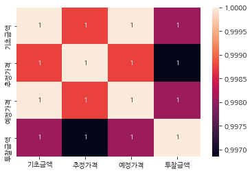
3. 날짜
train['입찰일시'].head()0 2020-03-13 16:00
1 2020-03-13 16:00
2 2020-03-13 16:00
3 2020-03-13 16:00
4 2020-03-13 16:00
Name: 입찰일시, dtype: objectNaN 값 확인
train['입찰일시'].isnull().sum()0날짜를 변환 (datetime)
train['입찰일시'] = pd.to_datetime(train['입찰일시'])train['year'] = train['입찰일시'].dt.year
train['month'] = train['입찰일시'].dt.month
train['day'] = train['입찰일시'].dt.day
train['hour'] = train['입찰일시'].dt.hour
train['minute'] = train['입찰일시'].dt.minute
train['dayofweek'] = train['입찰일시'].dt.dayofweek
train['weekofyear'] = train['입찰일시'].dt.weekofyear
train['dayofyear'] = train['입찰일시'].dt.dayofyear
train['quarter'] = train['입찰일시'].dt.quarter연도 확인
plt.figure(figsize=(10, 6))
sns.countplot(train['year'])
plt.title('연도별 공고 현황', fontsize=18)
plt.show()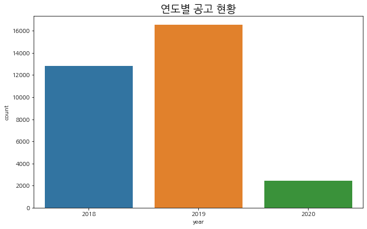
분기별 공고 현황
plt.figure(figsize=(10, 6))
sns.countplot(train['quarter'])
plt.title('분기별 공고 현황', fontsize=18)
plt.show()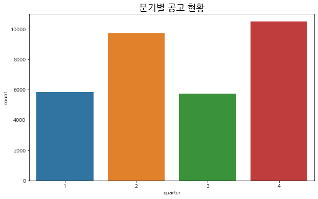
월별 공고 현황
plt.figure(figsize=(10, 6))
sns.countplot(train['month'])
plt.title('월별 공고 현황', fontsize=18)
plt.show()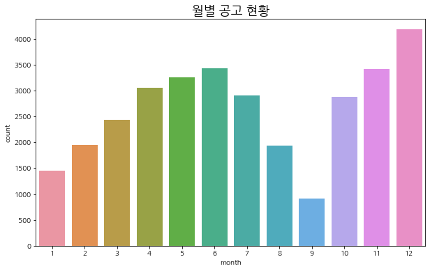
일별 공고 현황
plt.figure(figsize=(10, 6))
sns.countplot(train['day'])
plt.title('일자별 공고 현황', fontsize=18)
plt.show()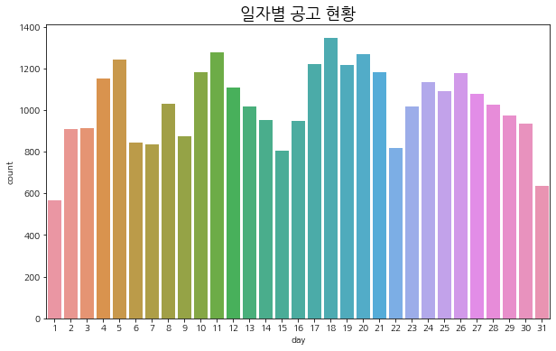
시간대별 공고 현황
plt.figure(figsize=(10, 6))
sns.countplot(train['hour'])
plt.title('시간대별 공고 현황', fontsize=18)
plt.show()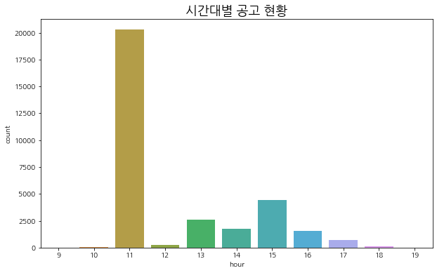
분(minute)별 공고 현황
plt.figure(figsize=(10, 6))
sns.countplot(train['minute'])
plt.title('분별 공고 현황', fontsize=18)
plt.show()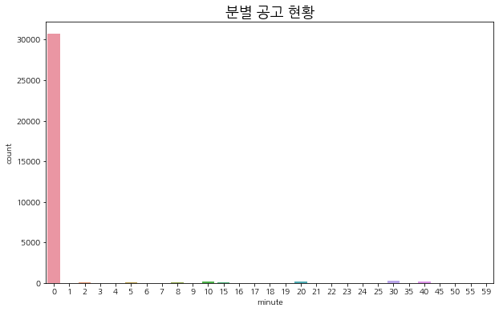
요일별 공고 현황
- 0: 월요일 ~ 6: 일요일
- 일요일은 역시 공고가 없다.
- 토요일은 공고가 2건 있었다.
plt.figure(figsize=(10, 6))
sns.countplot(train['dayofweek'])
plt.title('요일별 공고 현황', fontsize=18)
plt.show()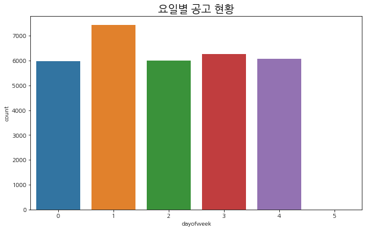
4. 지역
train['지역'].value_counts()전남 4141
경북 3884
경기 3756
경남 3480
강원 3259
전북 2544
충남 2204
충북 1631
서울 1608
부산 821
제주 813
대구 729
인천 722
대전 425
광주 344
울산 338
전국 240
세종 138
전국,경기 128
전국,경북 58
전국,서울 57
전국,전남 44
전국,전북 38
전국,경남 37
서울,경기 36
전국,충남 31
전국,충북 28
전국,강원 27
전국,부산 23
전국,인천 23
...
전국,세종 12
충남,세종 9
전국,대전 8
전국,제주 8
부산,경남 7
인천,경기 5
서울,인천,경기 5
전북,전남 3
충남,전북 3
대전,충북,충남,세종 3
대전,충북,세종 2
대전,충남 2
대전,충북,충남 2
인천,경기,전남 1
부산,울산 1
울산,경남 1
충북,충남,전북 1
서울,경기,강원 1
경남,전남 1
전국,서울,경기 1
경기,강원 1
경기,강원,충북 1
대구,경북,경남 1
강원,경북,전남 1
부산,울산,경북 1
전국,울산,경남 1
강원,충북 1
광주,전북,전남 1
서울,인천 1
부산,대구,울산,경북,경남 1
Name: 지역, Length: 65, dtype: int64지역을 , 기준으로 분리합니다.
area = train['지역'].str.split(',')area.head()0 [경기]
1 [충남]
2 [충남]
3 [강원]
4 [전북]
Name: 지역, dtype: object최소 값과, 최대 값을 살펴봅니다.
area_count = area.apply(lambda x: len(x))
area_count.min(), area_count.max()(1, 5)각각의 데이터를 분리하여 column을 만들도록 합니다.
area_split = train["지역"].str.split(",", n=5, expand=True) area_split.iloc[[345, 12390, 1646, 16326]]| 0 | 1 | 2 | 3 | 4 | |
|---|---|---|---|---|---|
| 345 | 전국 | None | None | None | None |
| 12390 | 대전 | 충남 | None | None | None |
| 1646 | 전국 | 울산 | 경남 | None | None |
| 16326 | 부산 | 대구 | 울산 | 경북 | 경남 |
area_key = list(train['지역'].value_counts()[:18].keys())
area_key['전남',
'경북',
'경기',
'경남',
'강원',
'전북',
'충남',
'충북',
'서울',
'부산',
'제주',
'대구',
'인천',
'대전',
'광주',
'울산',
'전국',
'세종']data = np.zeros(shape=(len(area), 18))
data.shape(31776, 18)area_df = pd.DataFrame(columns=area_key, data=data)지역과 지역 값 컬럼을 합칩니다
area_merged = pd.concat([area, area_df], axis=1)area_merged.tail()| 지역 | 전남 | 경북 | 경기 | 경남 | 강원 | 전북 | 충남 | 충북 | 서울 | 부산 | 제주 | 대구 | 인천 | 대전 | 광주 | 울산 | 전국 | 세종 | |
|---|---|---|---|---|---|---|---|---|---|---|---|---|---|---|---|---|---|---|---|
| 31771 | [경남] | 0.0 | 0.0 | 0.0 | 0.0 | 0.0 | 0.0 | 0.0 | 0.0 | 0.0 | 0.0 | 0.0 | 0.0 | 0.0 | 0.0 | 0.0 | 0.0 | 0.0 | 0.0 |
| 31772 | [전국] | 0.0 | 0.0 | 0.0 | 0.0 | 0.0 | 0.0 | 0.0 | 0.0 | 0.0 | 0.0 | 0.0 | 0.0 | 0.0 | 0.0 | 0.0 | 0.0 | 0.0 | 0.0 |
| 31773 | [전국] | 0.0 | 0.0 | 0.0 | 0.0 | 0.0 | 0.0 | 0.0 | 0.0 | 0.0 | 0.0 | 0.0 | 0.0 | 0.0 | 0.0 | 0.0 | 0.0 | 0.0 | 0.0 |
| 31774 | [충북] | 0.0 | 0.0 | 0.0 | 0.0 | 0.0 | 0.0 | 0.0 | 0.0 | 0.0 | 0.0 | 0.0 | 0.0 | 0.0 | 0.0 | 0.0 | 0.0 | 0.0 | 0.0 |
| 31775 | [경남] | 0.0 | 0.0 | 0.0 | 0.0 | 0.0 | 0.0 | 0.0 | 0.0 | 0.0 | 0.0 | 0.0 | 0.0 | 0.0 | 0.0 | 0.0 | 0.0 | 0.0 | 0.0 |
list에 지역이 포함된 경우 1로 체크합니다
def check_area(data):
for d in data['지역']:
data[d] = 1
return dataarea = area_merged.apply(check_area, axis=1)area.head()| 지역 | 전남 | 경북 | 경기 | 경남 | 강원 | 전북 | 충남 | 충북 | 서울 | 부산 | 제주 | 대구 | 인천 | 대전 | 광주 | 울산 | 전국 | 세종 | |
|---|---|---|---|---|---|---|---|---|---|---|---|---|---|---|---|---|---|---|---|
| 0 | [경기] | 0.0 | 0.0 | 1.0 | 0.0 | 0.0 | 0.0 | 0.0 | 0.0 | 0.0 | 0.0 | 0.0 | 0.0 | 0.0 | 0.0 | 0.0 | 0.0 | 0.0 | 0.0 |
| 1 | [충남] | 0.0 | 0.0 | 0.0 | 0.0 | 0.0 | 0.0 | 1.0 | 0.0 | 0.0 | 0.0 | 0.0 | 0.0 | 0.0 | 0.0 | 0.0 | 0.0 | 0.0 | 0.0 |
| 2 | [충남] | 0.0 | 0.0 | 0.0 | 0.0 | 0.0 | 0.0 | 1.0 | 0.0 | 0.0 | 0.0 | 0.0 | 0.0 | 0.0 | 0.0 | 0.0 | 0.0 | 0.0 | 0.0 |
| 3 | [강원] | 0.0 | 0.0 | 0.0 | 0.0 | 1.0 | 0.0 | 0.0 | 0.0 | 0.0 | 0.0 | 0.0 | 0.0 | 0.0 | 0.0 | 0.0 | 0.0 | 0.0 | 0.0 |
| 4 | [전북] | 0.0 | 0.0 | 0.0 | 0.0 | 0.0 | 1.0 | 0.0 | 0.0 | 0.0 | 0.0 | 0.0 | 0.0 | 0.0 | 0.0 | 0.0 | 0.0 | 0.0 | 0.0 |
area.iloc[1646]지역 [전국, 울산, 경남]
전남 0
경북 0
경기 0
경남 1
강원 0
전북 0
충남 0
충북 0
서울 0
부산 0
제주 0
대구 0
인천 0
대전 0
광주 0
울산 1
전국 1
세종 0
Name: 1646, dtype: object지역은 drop합니다
area = area.drop('지역', 1)area.head()| 전남 | 경북 | 경기 | 경남 | 강원 | 전북 | 충남 | 충북 | 서울 | 부산 | 제주 | 대구 | 인천 | 대전 | 광주 | 울산 | 전국 | 세종 | |
|---|---|---|---|---|---|---|---|---|---|---|---|---|---|---|---|---|---|---|
| 0 | 0.0 | 0.0 | 1.0 | 0.0 | 0.0 | 0.0 | 0.0 | 0.0 | 0.0 | 0.0 | 0.0 | 0.0 | 0.0 | 0.0 | 0.0 | 0.0 | 0.0 | 0.0 |
| 1 | 0.0 | 0.0 | 0.0 | 0.0 | 0.0 | 0.0 | 1.0 | 0.0 | 0.0 | 0.0 | 0.0 | 0.0 | 0.0 | 0.0 | 0.0 | 0.0 | 0.0 | 0.0 |
| 2 | 0.0 | 0.0 | 0.0 | 0.0 | 0.0 | 0.0 | 1.0 | 0.0 | 0.0 | 0.0 | 0.0 | 0.0 | 0.0 | 0.0 | 0.0 | 0.0 | 0.0 | 0.0 |
| 3 | 0.0 | 0.0 | 0.0 | 0.0 | 1.0 | 0.0 | 0.0 | 0.0 | 0.0 | 0.0 | 0.0 | 0.0 | 0.0 | 0.0 | 0.0 | 0.0 | 0.0 | 0.0 |
| 4 | 0.0 | 0.0 | 0.0 | 0.0 | 0.0 | 1.0 | 0.0 | 0.0 | 0.0 | 0.0 | 0.0 | 0.0 | 0.0 | 0.0 | 0.0 | 0.0 | 0.0 | 0.0 |
area.shape(31776, 18)train.shape(31776, 76)5. 업체별 사정율
사정율이란 개찰후 결정된 예정가격과 예비가격기초금액같의 차이를 백분율로 나타낸것이라고 정의 할 수 있습니다.
법률적인 개념은 아니지만 입찰담당자들 사이에 널리 쓰이는 개념입니다.
예를 들어
기초금액 : 100억
예정가격 : 101억이라면
사정율을 1%라고 합니다.
즉, 표면적으로 보이는 투찰율은 다르지만 사정율을 계산해서 보면 패턴을 볼 수 있다는 것이지요.
특정발주처나 특정업체의 입찰 패턴을 분석할 때 투찰율을 분석하면 아무런 결과를 얻을 수가 없습니다.
그러나 사정율로 분석을 하게 되면 패턴을 발견할 수도 있습니다.
복수예비가격을 사전에 발표하는 발주처의 성향을 분석할때도 금액만으로는 원하는 결과를 얻을수 없습니다.
각각의 예비가격에 대한 사정율을 계산해서 일정기간 분석해 보면 패턴이 있음을 알 수 있습니다.
train['업체별사정율'].head()0 99.4565
1 99.5138
2 99.4114
3 99.9886
4 99.6845
Name: 업체별사정율, dtype: objecttrain.loc[train['업체별사정율'].str.contains('-'), '업체별사정율'].head(10)288 ( - )
345 ( - )
854 ( - )
1046 ( - )
2227 ( - )
2292 ( - )
2764 ( - )
2765 ( - )
2798 ( - )
3056 ( - )
Name: 업체별사정율, dtype: object( - ) 이루어진 데이터는 0으로 치환합니다
train.loc[train['업체별사정율'].str.contains('-'), '업체별사정율'] = np.nantrain['업체별사정율'] = train['업체별사정율'].fillna(0)업체별 사정율의 데이터를 float로 변경합니다
train['업체별사정율'] = train['업체별사정율'].astype('float32')7. 불필요한 컬럼 정리
train.columnsIndex(['번호', '공고업종', '지역', '공고번호', '발주기관', '입찰일시', '기초금액', '추정가격', '낙찰하한율',
'예정가격', '예가', '낙찰하한가', '투찰', '업체명', '대표자', '투찰금액', '투찰율', '기초대비',
'업체별사정율', 'num_1_num', 'num_1_money', 'num_1_per', 'num_2_num',
'num_2_money', 'num_2_per', 'num_3_num', 'num_3_money', 'num_3_per',
'num_4_num', 'num_4_money', 'num_4_per', 'num_5_num', 'num_5_money',
'num_5_per', 'num_6_num', 'num_6_money', 'num_6_per', 'num_7_num',
'num_7_money', 'num_7_per', 'num_8_num', 'num_8_money', 'num_8_per',
'num_9_num', 'num_9_money', 'num_9_per', 'num_10_num', 'num_10_money',
'num_10_per', 'num_11_num', 'num_11_money', 'num_11_per', 'num_12_num',
'num_12_money', 'num_12_per', 'num_13_num', 'num_13_money',
'num_13_per', 'num_14_num', 'num_14_money', 'num_14_per', 'num_15_num',
'num_15_money', 'num_15_per', 'total', 'Unnamed: 65', 'Unnamed: 66',
'year', 'month', 'day', 'hour', 'minute', 'dayofweek', 'weekofyear',
'dayofyear', 'quarter'],
dtype='object')cols = ['업체명',
'기초금액',
'예가',
'업체별사정율',
'year',
'month',
'day',
'hour',
'minute',
'dayofweek',
'weekofyear',
'dayofyear',
'quarter',
]train[cols].head()| 업체명 | 기초금액 | 예가 | 업체별사정율 | year | month | day | hour | minute | dayofweek | weekofyear | dayofyear | quarter | |
|---|---|---|---|---|---|---|---|---|---|---|---|---|---|
| 0 | 제이티건설(주) | 166200000.0 | 99.407501 | 99.456497 | 2020 | 3 | 13 | 16 | 0 | 4 | 11 | 73 | 1 |
| 1 | 통일종합건설 주식회사 | 49000000.0 | 99.273003 | 99.513802 | 2020 | 3 | 13 | 16 | 0 | 4 | 11 | 73 | 1 |
| 2 | 성문건설 주식회사 | 35000000.0 | 99.120697 | 99.411400 | 2020 | 3 | 13 | 16 | 0 | 4 | 11 | 73 | 1 |
| 3 | (주)덕산종합건설 | 27000000.0 | 99.877800 | 99.988602 | 2020 | 3 | 13 | 16 | 0 | 4 | 11 | 73 | 1 |
| 4 | (유)아라야 | 64460000.0 | 99.681801 | 99.684502 | 2020 | 3 | 13 | 16 | 0 | 4 | 11 | 73 | 1 |
train[cols].info()<class 'pandas.core.frame.DataFrame'>
RangeIndex: 31776 entries, 0 to 31775
Data columns (total 13 columns):
업체명 31776 non-null object
기초금액 31776 non-null float32
예가 31776 non-null float32
업체별사정율 31776 non-null float32
year 31776 non-null int64
month 31776 non-null int64
day 31776 non-null int64
hour 31776 non-null int64
minute 31776 non-null int64
dayofweek 31776 non-null int64
weekofyear 31776 non-null int64
dayofyear 31776 non-null int64
quarter 31776 non-null int64
dtypes: float32(3), int64(9), object(1)
memory usage: 2.8+ MBdf에 정리된 train 데이터와 area 데이터를 합칩니다
df = pd.concat([train[cols], area], axis=1)df.head()| 업체명 | 기초금액 | 예가 | 업체별사정율 | year | month | day | hour | minute | dayofweek | ... | 서울 | 부산 | 제주 | 대구 | 인천 | 대전 | 광주 | 울산 | 전국 | 세종 | |
|---|---|---|---|---|---|---|---|---|---|---|---|---|---|---|---|---|---|---|---|---|---|
| 0 | 제이티건설(주) | 166200000.0 | 99.407501 | 99.456497 | 2020 | 3 | 13 | 16 | 0 | 4 | ... | 0.0 | 0.0 | 0.0 | 0.0 | 0.0 | 0.0 | 0.0 | 0.0 | 0.0 | 0.0 |
| 1 | 통일종합건설 주식회사 | 49000000.0 | 99.273003 | 99.513802 | 2020 | 3 | 13 | 16 | 0 | 4 | ... | 0.0 | 0.0 | 0.0 | 0.0 | 0.0 | 0.0 | 0.0 | 0.0 | 0.0 | 0.0 |
| 2 | 성문건설 주식회사 | 35000000.0 | 99.120697 | 99.411400 | 2020 | 3 | 13 | 16 | 0 | 4 | ... | 0.0 | 0.0 | 0.0 | 0.0 | 0.0 | 0.0 | 0.0 | 0.0 | 0.0 | 0.0 |
| 3 | (주)덕산종합건설 | 27000000.0 | 99.877800 | 99.988602 | 2020 | 3 | 13 | 16 | 0 | 4 | ... | 0.0 | 0.0 | 0.0 | 0.0 | 0.0 | 0.0 | 0.0 | 0.0 | 0.0 | 0.0 |
| 4 | (유)아라야 | 64460000.0 | 99.681801 | 99.684502 | 2020 | 3 | 13 | 16 | 0 | 4 | ... | 0.0 | 0.0 | 0.0 | 0.0 | 0.0 | 0.0 | 0.0 | 0.0 | 0.0 | 0.0 |
5 rows × 31 columns
지역도 잘 합쳐져 있는지 확인합니다
df.iloc[:, 13:].tail()| 전남 | 경북 | 경기 | 경남 | 강원 | 전북 | 충남 | 충북 | 서울 | 부산 | 제주 | 대구 | 인천 | 대전 | 광주 | 울산 | 전국 | 세종 | |
|---|---|---|---|---|---|---|---|---|---|---|---|---|---|---|---|---|---|---|
| 31771 | 0.0 | 0.0 | 0.0 | 1.0 | 0.0 | 0.0 | 0.0 | 0.0 | 0.0 | 0.0 | 0.0 | 0.0 | 0.0 | 0.0 | 0.0 | 0.0 | 0.0 | 0.0 |
| 31772 | 0.0 | 0.0 | 0.0 | 0.0 | 0.0 | 0.0 | 0.0 | 0.0 | 0.0 | 0.0 | 0.0 | 0.0 | 0.0 | 0.0 | 0.0 | 0.0 | 1.0 | 0.0 |
| 31773 | 0.0 | 0.0 | 0.0 | 0.0 | 0.0 | 0.0 | 0.0 | 0.0 | 0.0 | 0.0 | 0.0 | 0.0 | 0.0 | 0.0 | 0.0 | 0.0 | 1.0 | 0.0 |
| 31774 | 0.0 | 0.0 | 0.0 | 0.0 | 0.0 | 0.0 | 0.0 | 1.0 | 0.0 | 0.0 | 0.0 | 0.0 | 0.0 | 0.0 | 0.0 | 0.0 | 0.0 | 0.0 |
| 31775 | 0.0 | 0.0 | 0.0 | 1.0 | 0.0 | 0.0 | 0.0 | 0.0 | 0.0 | 0.0 | 0.0 | 0.0 | 0.0 | 0.0 | 0.0 | 0.0 | 0.0 | 0.0 |
train['지역'].tail()31771 경남
31772 전국
31773 전국
31774 충북
31775 경남
Name: 지역, dtype: object업체별사정율 -> 사정율 (컬럼명 변환)
df = df.rename(columns={'업체별사정율': '사정율'})df.head()| 업체명 | 기초금액 | 예가 | 사정율 | year | month | day | hour | minute | dayofweek | ... | 서울 | 부산 | 제주 | 대구 | 인천 | 대전 | 광주 | 울산 | 전국 | 세종 | |
|---|---|---|---|---|---|---|---|---|---|---|---|---|---|---|---|---|---|---|---|---|---|
| 0 | 제이티건설(주) | 166200000.0 | 99.407501 | 99.456497 | 2020 | 3 | 13 | 16 | 0 | 4 | ... | 0.0 | 0.0 | 0.0 | 0.0 | 0.0 | 0.0 | 0.0 | 0.0 | 0.0 | 0.0 |
| 1 | 통일종합건설 주식회사 | 49000000.0 | 99.273003 | 99.513802 | 2020 | 3 | 13 | 16 | 0 | 4 | ... | 0.0 | 0.0 | 0.0 | 0.0 | 0.0 | 0.0 | 0.0 | 0.0 | 0.0 | 0.0 |
| 2 | 성문건설 주식회사 | 35000000.0 | 99.120697 | 99.411400 | 2020 | 3 | 13 | 16 | 0 | 4 | ... | 0.0 | 0.0 | 0.0 | 0.0 | 0.0 | 0.0 | 0.0 | 0.0 | 0.0 | 0.0 |
| 3 | (주)덕산종합건설 | 27000000.0 | 99.877800 | 99.988602 | 2020 | 3 | 13 | 16 | 0 | 4 | ... | 0.0 | 0.0 | 0.0 | 0.0 | 0.0 | 0.0 | 0.0 | 0.0 | 0.0 | 0.0 |
| 4 | (유)아라야 | 64460000.0 | 99.681801 | 99.684502 | 2020 | 3 | 13 | 16 | 0 | 4 | ... | 0.0 | 0.0 | 0.0 | 0.0 | 0.0 | 0.0 | 0.0 | 0.0 | 0.0 | 0.0 |
5 rows × 31 columns
8. 사정율 - 예가 컬럼 생성 (1등 업체의 근접도 확인)
df['근접율'] = abs(df['예가'] - df['사정율'])plt.figure(figsize=(10, 6))
sns.distplot(df['근접율'])
plt.title('근접율 분포도', fontsize=18)
plt.show()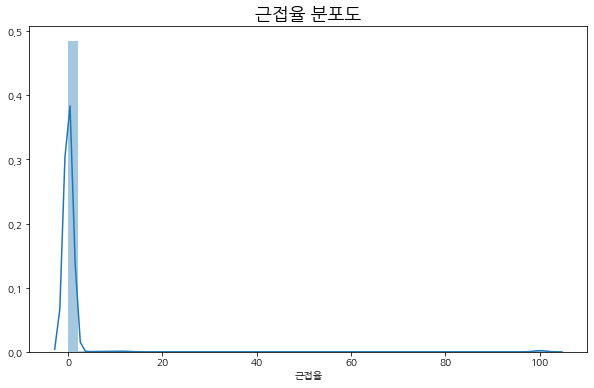
df.loc[df['근접율'] > 30, '근접율'].head(20)288 100.150597
345 99.907997
854 99.307800
1046 100.894501
2227 99.351601
2292 100.069702
2764 98.986198
2765 100.400200
2798 100.603203
3056 99.776497
3298 100.022202
3972 100.263702
4044 100.124496
4242 99.884697
4591 100.806999
5824 100.657700
5826 100.247002
6035 99.893700
6185 100.836197
6189 100.503700
Name: 근접율, dtype: float32사정율이 나와 있지 않은 column은 우리가 0으로 채워 주었기 때문에 100 이상의 수치가 나온다.
해당 컬럼은 제외하고 다시 시각화
plt.figure(figsize=(10, 6))
sns.distplot(df.loc[df['근접율'] < 1, '근접율'])
plt.title('근접율 분포도', fontsize=18)
plt.show()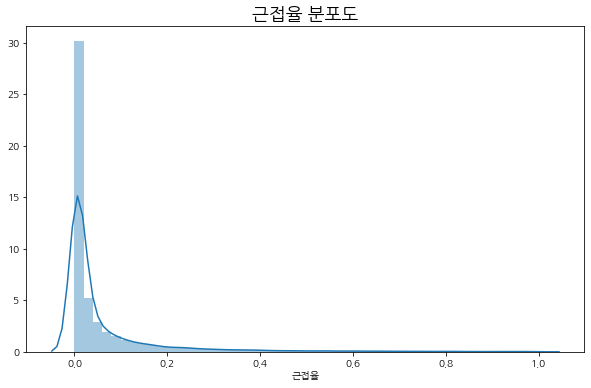
선정된 대다수의 업체가 근접율을 0.0 ~ 0.2 이하로 가져가고 있다는 점을 볼 수 있다
8. 상위 업체 사정율 분석
주로 활용할 유의미한 feature 정의 - 예가 (예측 label) - 일자 (datetime) 관련 column
안타깝께도… 기타 활용할만한 지표는 크게 보이지 않는다.
잘 되는 업체의 사정율 확인
df['업체명'].value_counts().head(50)태양종합건설 주식회사 28
신우건설 주식회사 28
남광건설 주식회사 27
신영종합건설(주) 25
주식회사 우리종합건설 25
일진건설 주식회사 25
동우건설 주식회사 24
삼진건설(주) 24
주식회사 혜성종합건설 23
보광종합건설 주식회사 23
우일종합건설(주) 22
효창건설(주) 22
청암종합건설 주식회사 22
영진건설(주) 22
대연종합건설 주식회사 22
거성종합건설(주) 21
세움종합건설 주식회사 21
세원종합건설 주식회사 21
우진종합건설(주) 20
두마종합건설주식회사 20
주식회사 부림종합건설 20
주식회사 덕성건설 20
우림종합건설(주) 20
서림종합건설 주식회사 20
유창건설 주식회사 20
(주)동일종합건설 20
대림종합건설 주식회사 20
예림종합건설(주) 20
청진건설주식회사 20
주식회사 태화건설 19
대창건설(주) 19
성원건설(주) 19
승원종합건설(주) 19
제이와이건설 주식회사 19
금종종합건설 주식회사 19
(주)거성종합건설 19
주식회사 에스엠건설 19
성인종합건설 주식회사 19
대호종합건설(주) 19
대원건설(주) 18
주식회사 다우종합건설 18
주식회사 일성건설 18
대영건설 주식회사 18
대일종합건설 주식회사 18
제이티건설(주) 18
(주)삼구건설 18
태창건설합자회사 18
주식회사 조영건설 18
제이케이종합건설 주식회사 18
주식회사 백율 17
Name: 업체명, dtype: int64시각화 함수화
def visualize_pct_time(data):
plt.figure(figsize=(10, 6))
d = data.groupby('year')['사정율'].mean()
sns.barplot(x=d.index, y=d)
plt.ylim(d.min() - 0.02, d.max() + 0.02)
plt.title('평균 사정율 (연도별)', fontsize=18)
plt.show()
print(d)
print('===='*10)
plt.figure(figsize=(10, 6))
d = data.groupby('quarter')['사정율'].mean()
sns.barplot(x=d.index, y=d)
plt.ylim(d.min() - 0.02, d.max() + 0.02)
plt.title('평균 사정율 (분기별)', fontsize=18)
plt.show()
print(d)
print('===='*10)
plt.figure(figsize=(10, 6))
d = data.groupby('month')['사정율'].mean()
sns.barplot(x=d.index, y=d)
plt.ylim(d.min() - 0.02, d.max() + 0.02)
plt.title('평균 사정율 (월별)', fontsize=18)
plt.show()
print(d)
print('===='*10)
plt.figure(figsize=(10, 6))
d = data.groupby('day')['사정율'].mean()
sns.barplot(x=d.index, y=d)
plt.ylim(d.min() - 0.02, d.max() + 0.02)
plt.title('평균 사정율 (일자별)', fontsize=18)
plt.show()
print(d)
print('===='*10)
plt.figure(figsize=(10, 6))
d = data.groupby('dayofweek')['사정율'].mean()
sns.barplot(x=d.index, y=d)
plt.ylim(d.min() - 0.02, d.max() + 0.02)
plt.title('평균 사정율 (요일별)', fontsize=18)
plt.show()
print(d)
print('===='*10)
plt.figure(figsize=(10, 6))
d = data.groupby('hour')['사정율'].mean()
sns.barplot(x=d.index, y=d)
plt.ylim(d.min() - 0.02, d.max() + 0.02)
plt.title('평균 사정율 (시간별)', fontsize=18)
plt.show()
print(d)
print('===='*10)
plt.figure(figsize=(10, 6))
d = data.groupby('minute')['사정율'].mean()
sns.barplot(x=d.index, y=d)
plt.ylim(d.min() - 0.02, d.max() + 0.02)
plt.title('평균 사정율 (분별)', fontsize=18)
plt.show()
print(d)
print('===='*10)
plt.figure(figsize=(10, 6))
d = data.groupby('weekofyear')['사정율'].mean()
sns.barplot(x=d.index, y=d)
plt.ylim(d.min() - 0.02, d.max() + 0.02)
plt.title('평균 사정율 (주차별)', fontsize=18)
plt.show()
print(d)
print('===='*10)%%javascript
IPython.OutputArea.auto_scroll_threshold = 9999;top 50개 업체 분석
df['업체명'].value_counts().head(50)태양종합건설 주식회사 28
신우건설 주식회사 28
남광건설 주식회사 27
신영종합건설(주) 25
주식회사 우리종합건설 25
일진건설 주식회사 25
동우건설 주식회사 24
삼진건설(주) 24
주식회사 혜성종합건설 23
보광종합건설 주식회사 23
우일종합건설(주) 22
효창건설(주) 22
청암종합건설 주식회사 22
영진건설(주) 22
대연종합건설 주식회사 22
거성종합건설(주) 21
세움종합건설 주식회사 21
세원종합건설 주식회사 21
우진종합건설(주) 20
두마종합건설주식회사 20
주식회사 부림종합건설 20
주식회사 덕성건설 20
우림종합건설(주) 20
서림종합건설 주식회사 20
유창건설 주식회사 20
(주)동일종합건설 20
대림종합건설 주식회사 20
예림종합건설(주) 20
청진건설주식회사 20
주식회사 태화건설 19
대창건설(주) 19
성원건설(주) 19
승원종합건설(주) 19
제이와이건설 주식회사 19
금종종합건설 주식회사 19
(주)거성종합건설 19
주식회사 에스엠건설 19
성인종합건설 주식회사 19
대호종합건설(주) 19
대원건설(주) 18
주식회사 다우종합건설 18
주식회사 일성건설 18
대영건설 주식회사 18
대일종합건설 주식회사 18
제이티건설(주) 18
(주)삼구건설 18
태창건설합자회사 18
주식회사 조영건설 18
제이케이종합건설 주식회사 18
주식회사 백율 17
Name: 업체명, dtype: int64company = list(df['업체명'].value_counts().head(50).keys())
company[:5]['태양종합건설 주식회사', '신우건설 주식회사', '남광건설 주식회사', '신영종합건설(주)', '주식회사 우리종합건설']df.loc[df['업체명'].isin(company)].head()| 업체명 | 기초금액 | 예가 | 사정율 | year | month | day | hour | minute | dayofweek | ... | 부산 | 제주 | 대구 | 인천 | 대전 | 광주 | 울산 | 전국 | 세종 | 근접율 | |
|---|---|---|---|---|---|---|---|---|---|---|---|---|---|---|---|---|---|---|---|---|---|
| 0 | 제이티건설(주) | 166200000.0 | 99.407501 | 99.456497 | 2020 | 3 | 13 | 16 | 0 | 4 | ... | 0.0 | 0.0 | 0.0 | 0.0 | 0.0 | 0.0 | 0.0 | 0.0 | 0.0 | 0.048996 |
| 7 | (주)동일종합건설 | 131254000.0 | 100.563698 | 100.712997 | 2020 | 3 | 13 | 15 | 0 | 4 | ... | 0.0 | 0.0 | 0.0 | 0.0 | 0.0 | 0.0 | 0.0 | 0.0 | 0.0 | 0.149300 |
| 19 | 대림종합건설 주식회사 | 152384992.0 | 100.215202 | 100.254097 | 2020 | 3 | 13 | 11 | 0 | 4 | ... | 0.0 | 0.0 | 0.0 | 0.0 | 0.0 | 0.0 | 0.0 | 0.0 | 0.0 | 0.038895 |
| 20 | (주)동일종합건설 | 140848000.0 | 99.618202 | 99.675301 | 2020 | 3 | 12 | 17 | 0 | 3 | ... | 0.0 | 0.0 | 0.0 | 0.0 | 0.0 | 0.0 | 0.0 | 0.0 | 0.0 | 0.057098 |
| 48 | 우림종합건설(주) | 99250000.0 | 99.945999 | 99.966797 | 2020 | 3 | 11 | 14 | 0 | 2 | ... | 0.0 | 0.0 | 0.0 | 0.0 | 0.0 | 0.0 | 0.0 | 0.0 | 0.0 | 0.020798 |
5 rows × 32 columns
df.loc[df['업체명'].isin(company)].shape(1032, 32)상위 50개 업체에 대한 사정율 분석
visualize_pct_time(df.loc[df['업체명'].isin(company)])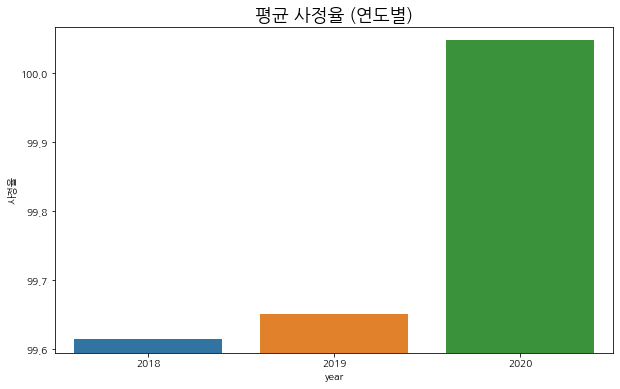
year
2018 99.614723
2019 99.650284
2020 100.047600
Name: 사정율, dtype: float32
========================================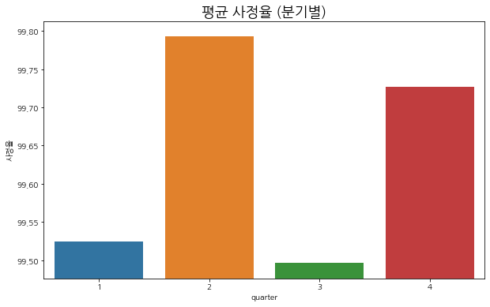
quarter
1 99.524040
2 99.793167
3 99.495934
4 99.726967
Name: 사정율, dtype: float32
========================================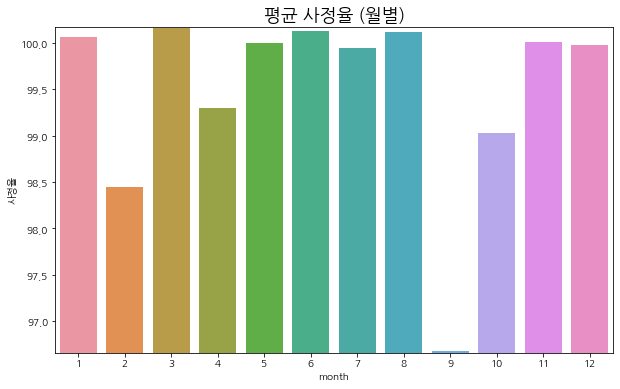
month
1 100.058823
2 98.448105
3 100.153893
4 99.295822
5 99.994537
6 100.129677
7 99.948189
8 100.118813
9 96.680954
10 99.025192
11 100.005043
12 99.979912
Name: 사정율, dtype: float32
========================================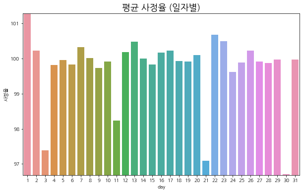
day
1 101.271019
2 100.231270
3 97.381348
4 99.821388
5 99.954758
6 99.833641
7 100.318314
8 100.020660
9 99.737701
10 99.918396
11 98.235985
12 100.185211
13 100.478363
14 99.994896
15 99.834633
16 100.165291
17 100.220901
18 99.927635
19 99.911423
20 100.103706
21 97.082840
22 100.683266
23 100.495117
24 99.625702
25 99.886864
26 100.223473
27 99.914177
28 99.872894
29 99.967613
30 96.702568
31 99.965637
Name: 사정율, dtype: float32
========================================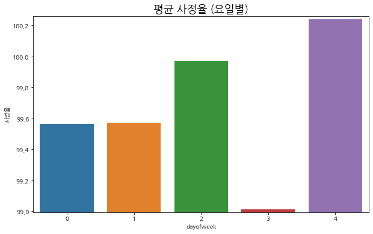
dayofweek
0 99.562622
1 99.574066
2 99.974068
3 99.014107
4 100.241432
Name: 사정율, dtype: float32
========================================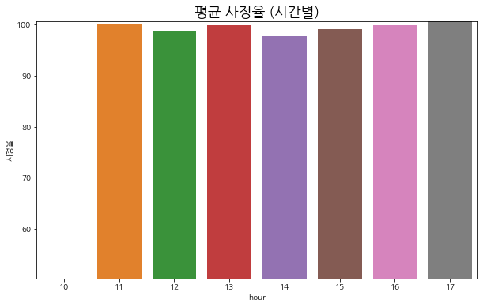
hour
10 50.258099
11 100.028793
12 98.877197
13 99.950279
14 97.659386
15 99.175568
16 99.841110
17 100.710976
Name: 사정율, dtype: float32
========================================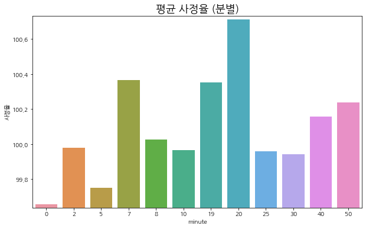
minute
0 99.656639
2 99.977829
5 99.748566
7 100.364998
8 100.026352
10 99.964233
19 100.351303
20 100.712151
25 99.957802
30 99.941765
40 100.157654
50 100.236298
Name: 사정율, dtype: float32
========================================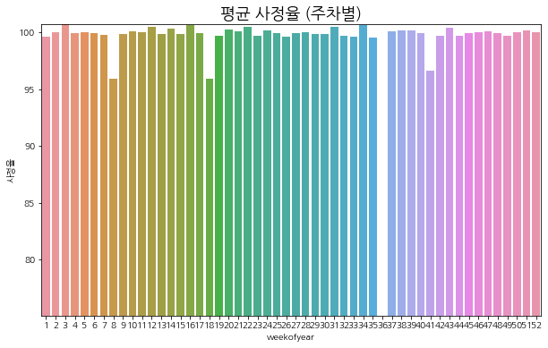
weekofyear
1 99.661919
2 100.014099
3 100.747063
4 99.940147
5 100.009071
6 99.955833
7 99.823471
8 95.927040
9 99.859200
10 100.142670
11 100.001343
12 100.518356
13 99.893852
14 100.370247
15 99.850792
16 100.627945
17 99.982849
18 95.889160
19 99.727051
20 100.228340
21 100.135078
22 100.518684
23 99.685753
24 100.148605
25 99.961456
26 99.614449
27 99.932823
28 100.017334
29 99.884766
30 99.870316
31 100.464653
32 99.721504
33 99.657547
34 100.685196
35 99.553894
36 75.060875
37 100.103607
38 100.163940
39 100.151520
40 99.986008
41 96.657692
42 99.729042
43 100.439697
44 99.698433
45 99.980774
46 100.067871
47 100.138771
48 99.932625
49 99.713791
50 99.992912
51 100.159637
52 100.053780
Name: 사정율, dtype: float32
========================================df.head()| 업체명 | 기초금액 | 예가 | 사정율 | year | month | day | hour | minute | dayofweek | ... | 부산 | 제주 | 대구 | 인천 | 대전 | 광주 | 울산 | 전국 | 세종 | 근접율 | |
|---|---|---|---|---|---|---|---|---|---|---|---|---|---|---|---|---|---|---|---|---|---|
| 0 | 제이티건설(주) | 166200000.0 | 99.407501 | 99.456497 | 2020 | 3 | 13 | 16 | 0 | 4 | ... | 0.0 | 0.0 | 0.0 | 0.0 | 0.0 | 0.0 | 0.0 | 0.0 | 0.0 | 0.048996 |
| 1 | 통일종합건설 주식회사 | 49000000.0 | 99.273003 | 99.513802 | 2020 | 3 | 13 | 16 | 0 | 4 | ... | 0.0 | 0.0 | 0.0 | 0.0 | 0.0 | 0.0 | 0.0 | 0.0 | 0.0 | 0.240799 |
| 2 | 성문건설 주식회사 | 35000000.0 | 99.120697 | 99.411400 | 2020 | 3 | 13 | 16 | 0 | 4 | ... | 0.0 | 0.0 | 0.0 | 0.0 | 0.0 | 0.0 | 0.0 | 0.0 | 0.0 | 0.290703 |
| 3 | (주)덕산종합건설 | 27000000.0 | 99.877800 | 99.988602 | 2020 | 3 | 13 | 16 | 0 | 4 | ... | 0.0 | 0.0 | 0.0 | 0.0 | 0.0 | 0.0 | 0.0 | 0.0 | 0.0 | 0.110802 |
| 4 | (유)아라야 | 64460000.0 | 99.681801 | 99.684502 | 2020 | 3 | 13 | 16 | 0 | 4 | ... | 0.0 | 0.0 | 0.0 | 0.0 | 0.0 | 0.0 | 0.0 | 0.0 | 0.0 | 0.002701 |
5 rows × 32 columns
9. 예측
- 사정율이 중요한 feature라 판단
- 따라서, 사정율이 0인 컬럼은 제외합니다
train_data = df.loc[df['사정율'] > 85]train_data.shape(31595, 32)업체명은 drop 합니다
train_data = train_data.drop('업체명', 1)지역은 서울, 전국을 포함하는 지표만 추립니다
train_data = train_data.loc[(train_data['서울'] == 1) | (train_data['전국'] == 1)]area_drop_cols = ['전남', '경북', '경기', '경남', '강원', '전북', '충남', '충북', '부산', '제주', '대구',
'인천', '대전', '광주', '울산', '세종']train_data = train_data.drop(area_drop_cols, axis=1)예가, 사정율, 근접율은 사후에 나오는 지표 이므로 drop 합니다
train_feature = train_data.drop(['예가', '사정율', '근접율'], 1)
train_label = train_data['예가']최종 Feature
train_feature.head()| 기초금액 | year | month | day | hour | minute | dayofweek | weekofyear | dayofyear | quarter | 서울 | 전국 | |
|---|---|---|---|---|---|---|---|---|---|---|---|---|
| 167 | 4.674210e+08 | 2020 | 3 | 6 | 15 | 0 | 4 | 10 | 66 | 1 | 1.0 | 0.0 |
| 219 | 1.154583e+09 | 2020 | 3 | 6 | 11 | 0 | 4 | 10 | 66 | 1 | 1.0 | 0.0 |
| 235 | 6.420660e+08 | 2020 | 3 | 5 | 15 | 0 | 3 | 10 | 65 | 1 | 1.0 | 0.0 |
| 275 | 1.330120e+09 | 2020 | 3 | 5 | 11 | 0 | 3 | 10 | 65 | 1 | 1.0 | 0.0 |
| 305 | 9.960500e+08 | 2020 | 3 | 4 | 15 | 0 | 2 | 10 | 64 | 1 | 1.0 | 0.0 |
모델링
from sklearn.model_selection import KFold
from xgboost import XGBRegressor
from lightgbm import LGBMRegressorSEED = 123# 코드 비공개 처리[0] validation_0-mae:97.43237 validation_1-mae:97.48483
Multiple eval metrics have been passed: 'validation_1-mae' will be used for early stopping.
Will train until validation_1-mae hasn't improved in 30 rounds.
[200] validation_0-mae:1.72026 validation_1-mae:1.77291
[400] validation_0-mae:0.53526 validation_1-mae:0.61973
Stopping. Best iteration:
[390] validation_0-mae:0.53786 validation_1-mae:0.61945
[0] validation_0-mae:97.45020 validation_1-mae:97.41235
Multiple eval metrics have been passed: 'validation_1-mae' will be used for early stopping.
Will train until validation_1-mae hasn't improved in 30 rounds.
[200] validation_0-mae:1.72187 validation_1-mae:1.68547
Stopping. Best iteration:
[349] validation_0-mae:0.55724 validation_1-mae:0.57244
[0] validation_0-mae:97.43646 validation_1-mae:97.46812
Multiple eval metrics have been passed: 'validation_1-mae' will be used for early stopping.
Will train until validation_1-mae hasn't improved in 30 rounds.
[200] validation_0-mae:1.72254 validation_1-mae:1.75116
[400] validation_0-mae:0.54700 validation_1-mae:0.58112
Stopping. Best iteration:
[420] validation_0-mae:0.54295 validation_1-mae:0.58088
[0] validation_0-mae:97.44897 validation_1-mae:97.41762
Multiple eval metrics have been passed: 'validation_1-mae' will be used for early stopping.
Will train until validation_1-mae hasn't improved in 30 rounds.
[200] validation_0-mae:1.72082 validation_1-mae:1.69088
Stopping. Best iteration:
[369] validation_0-mae:0.54636 validation_1-mae:0.59549
[0] validation_0-mae:97.44544 validation_1-mae:97.43135
Multiple eval metrics have been passed: 'validation_1-mae' will be used for early stopping.
Will train until validation_1-mae hasn't improved in 30 rounds.
[200] validation_0-mae:1.72041 validation_1-mae:1.70751
[400] validation_0-mae:0.54088 validation_1-mae:0.59959
Stopping. Best iteration:
[378] validation_0-mae:0.54601 validation_1-mae:0.59915
avg score: 0.593481pd.DataFrame(list(zip(train_feature.columns, xgb_model.feature_importances_))).sort_values(by=1, ascending=False)| 0 | 1 | |
|---|---|---|
| 9 | quarter | 0.212947 |
| 0 | 기초금액 | 0.090076 |
| 8 | dayofyear | 0.089709 |
| 11 | 전국 | 0.078249 |
| 7 | weekofyear | 0.075134 |
| 5 | minute | 0.074531 |
| 6 | dayofweek | 0.070992 |
| 3 | day | 0.070871 |
| 10 | 서울 | 0.069562 |
| 4 | hour | 0.059260 |
| 1 | year | 0.055194 |
| 2 | month | 0.053476 |
def train_xgb(train_features, train_labels, test_features, num_split=3):
# 코드 비공개 처리
return predsdef train_lgbm(train_feature, train_label, test_feature, num_split=5):
# 코드 비공개 처리
return predsdef train_xgb(train_feature, train_label, test_feature, num_split=3):
# 코드 비공개 처리
return predsfrom sklearn.model_selection import train_test_split
x_train, x_valid, y_train, y_valid = train_test_split(train_feature, train_label, random_state=321)
x_train.shape, x_valid.shape((1790, 12), (597, 12))lgbm_pred = train_lgbm(x_train, y_train, x_valid)
xgb_pred = train_xgb(x_train, y_train, x_valid)Training until validation scores don't improve for 30 rounds
Early stopping, best iteration is:
[1] training's l1: 0.596837 training's l2: 0.544079 valid_1's l1: 0.599506 valid_1's l2: 0.56646
Training until validation scores don't improve for 30 rounds
Early stopping, best iteration is:
[9] training's l1: 0.608888 training's l2: 0.56613 valid_1's l1: 0.541242 valid_1's l2: 0.460266
Training until validation scores don't improve for 30 rounds
Early stopping, best iteration is:
[1] training's l1: 0.590583 training's l2: 0.540623 valid_1's l1: 0.624393 valid_1's l2: 0.580429
Training until validation scores don't improve for 30 rounds
Early stopping, best iteration is:
[1] training's l1: 0.593366 training's l2: 0.541869 valid_1's l1: 0.613335 valid_1's l2: 0.57537
Training until validation scores don't improve for 30 rounds
Early stopping, best iteration is:
[19] training's l1: 0.58905 training's l2: 0.536167 valid_1's l1: 0.609964 valid_1's l2: 0.563332
avg score: 0.5976880338001499
[0] validation_0-mae:97.44695 validation_1-mae:97.39553
Multiple eval metrics have been passed: 'validation_1-mae' will be used for early stopping.
Will train until validation_1-mae hasn't improved in 20 rounds.
[200] validation_0-mae:1.72761 validation_1-mae:1.67668
Stopping. Best iteration:
[366] validation_0-mae:0.54420 validation_1-mae:0.58611
[0] validation_0-mae:97.43077 validation_1-mae:97.42883
Multiple eval metrics have been passed: 'validation_1-mae' will be used for early stopping.
Will train until validation_1-mae hasn't improved in 20 rounds.
[200] validation_0-mae:1.72430 validation_1-mae:1.72252
Stopping. Best iteration:
[349] validation_0-mae:0.55145 validation_1-mae:0.61090
[0] validation_0-mae:97.41282 validation_1-mae:97.46614
Multiple eval metrics have been passed: 'validation_1-mae' will be used for early stopping.
Will train until validation_1-mae hasn't improved in 20 rounds.
[200] validation_0-mae:1.72471 validation_1-mae:1.77892
[400] validation_0-mae:0.52633 validation_1-mae:0.62074
Stopping. Best iteration:
[400] validation_0-mae:0.52633 validation_1-mae:0.62074
avg score: 0.6059176666666666pred = lgbm_pred * 0.6 + xgb_pred * 0.4abs(pred - y_valid).mean()0.5554264117899838검증 (시뮬레이션)
validation_df = df.iloc[y_valid.index][['예가', '사정율']].copy()validation_df.head()| 예가 | 사정율 | |
|---|---|---|
| 14548 | 98.969002 | 98.977898 |
| 5612 | 99.151497 | 99.167297 |
| 16649 | 100.463997 | 100.474098 |
| 26280 | 99.882004 | 99.883202 |
| 17308 | 99.960197 | 99.964798 |
df.iloc[y_valid.index]['사정율'].head()14548 98.977898
5612 99.167297
16649 100.474098
26280 99.883202
17308 99.964798
Name: 사정율, dtype: float32validation_df['pred'] = predvalidation_df.head()| 예가 | 사정율 | pred | |
|---|---|---|---|
| 14548 | 98.969002 | 98.977898 | 99.907663 |
| 5612 | 99.151497 | 99.167297 | 99.847656 |
| 16649 | 100.463997 | 100.474098 | 99.921612 |
| 26280 | 99.882004 | 99.883202 | 99.940660 |
| 17308 | 99.960197 | 99.964798 | 99.905172 |
괴리율 = 예측값 - 예가 (0보다 작으면 무조건 탈락)
validation_df['괴리율'] = validation_df['pred'] - validation_df['예가']validation_df['선정여부'] = (validation_df['pred'] < validation_df['사정율']) & (validation_df['pred'] > validation_df['예가'])validation_df.loc[validation_df['괴리율'] >= 0].sort_values(by='괴리율').head()| 예가 | 사정율 | pred | 괴리율 | 선정여부 | |
|---|---|---|---|---|---|
| 7468 | 99.897202 | 99.933403 | 99.897466 | 0.000264 | True |
| 6025 | 99.857002 | 99.860001 | 99.857646 | 0.000643 | True |
| 21792 | 99.869003 | 99.874496 | 99.873144 | 0.004141 | True |
| 17479 | 99.917999 | 99.919998 | 99.924551 | 0.006552 | False |
| 26677 | 99.924004 | 99.925003 | 99.938099 | 0.014095 | False |
선정된 지표 확인
validation_df.loc[validation_df['선정여부'] ==True]| 예가 | 사정율 | pred | 괴리율 | 선정여부 | |
|---|---|---|---|---|---|
| 22744 | 99.438499 | 100.062599 | 99.869264 | 0.430764 | True |
| 10751 | 97.873703 | 100.247398 | 99.918239 | 2.044536 | True |
| 26726 | 99.441704 | 101.254898 | 99.859676 | 0.417972 | True |
| 6025 | 99.857002 | 99.860001 | 99.857646 | 0.000643 | True |
| 23983 | 99.671700 | 105.500000 | 99.884492 | 0.212792 | True |
| 21792 | 99.869003 | 99.874496 | 99.873144 | 0.004141 | True |
| 30818 | 99.890999 | 99.925003 | 99.905421 | 0.014422 | True |
| 7468 | 99.897202 | 99.933403 | 99.897466 | 0.000264 | True |
| 21491 | 99.849701 | 99.899803 | 99.897837 | 0.048136 | True |
idx = validation_df.loc[validation_df['선정여부'] ==True].index선정된 지표 (전체데이터)
df.iloc[idx]| 업체명 | 기초금액 | 예가 | 사정율 | year | month | day | hour | minute | dayofweek | ... | 부산 | 제주 | 대구 | 인천 | 대전 | 광주 | 울산 | 전국 | 세종 | 근접율 | |
|---|---|---|---|---|---|---|---|---|---|---|---|---|---|---|---|---|---|---|---|---|---|
| 22744 | (주)아랑존디 | 4.840000e+07 | 99.438499 | 100.062599 | 2018 | 10 | 19 | 11 | 0 | 4 | ... | 0.0 | 0.0 | 0.0 | 0.0 | 0.0 | 0.0 | 0.0 | 1.0 | 0.0 | 0.624100 |
| 10751 | (주)지투원 | 1.732107e+09 | 97.873703 | 100.247398 | 2019 | 7 | 9 | 11 | 0 | 1 | ... | 0.0 | 0.0 | 0.0 | 0.0 | 0.0 | 0.0 | 0.0 | 0.0 | 0.0 | 2.373695 |
| 26726 | 계룡건설산업 주식회사 | 2.322301e+10 | 99.441704 | 101.254898 | 2018 | 6 | 26 | 11 | 0 | 1 | ... | 0.0 | 0.0 | 0.0 | 0.0 | 0.0 | 0.0 | 0.0 | 1.0 | 0.0 | 1.813194 |
| 6025 | 세한종합건설 주식회사 | 1.335007e+10 | 99.857002 | 99.860001 | 2019 | 11 | 14 | 11 | 0 | 3 | ... | 0.0 | 0.0 | 0.0 | 0.0 | 0.0 | 0.0 | 0.0 | 1.0 | 0.0 | 0.002998 |
| 23983 | 중미건설합자회사 | 1.501838e+10 | 99.671700 | 105.500000 | 2018 | 9 | 10 | 17 | 0 | 0 | ... | 0.0 | 0.0 | 0.0 | 0.0 | 0.0 | 1.0 | 0.0 | 1.0 | 0.0 | 5.828300 |
| 21792 | 새움綜合建設 株式會社 | 1.856688e+09 | 99.869003 | 99.874496 | 2018 | 11 | 8 | 11 | 0 | 3 | ... | 0.0 | 0.0 | 0.0 | 0.0 | 0.0 | 0.0 | 0.0 | 0.0 | 0.0 | 0.005493 |
| 30818 | (주)이공 | 9.640700e+08 | 99.890999 | 99.925003 | 2018 | 4 | 6 | 11 | 0 | 4 | ... | 0.0 | 0.0 | 0.0 | 0.0 | 0.0 | 0.0 | 0.0 | 0.0 | 0.0 | 0.034004 |
| 7468 | 주식회사 예진건설 | 1.083887e+10 | 99.897202 | 99.933403 | 2019 | 10 | 22 | 11 | 0 | 1 | ... | 0.0 | 0.0 | 0.0 | 0.0 | 0.0 | 0.0 | 0.0 | 1.0 | 0.0 | 0.036201 |
| 21491 | 갑인종합건설주식회사 | 3.914170e+09 | 99.849701 | 99.899803 | 2018 | 11 | 14 | 11 | 0 | 2 | ... | 0.0 | 0.0 | 0.0 | 0.0 | 0.0 | 0.0 | 0.0 | 1.0 | 0.0 | 0.050102 |
9 rows × 32 columns